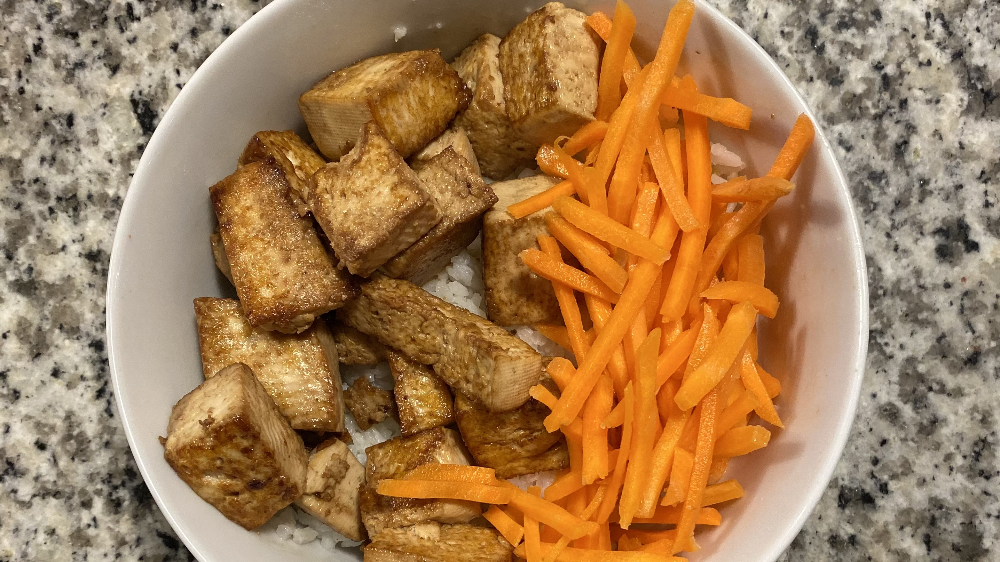

Tofu & Carrot Rice
An easy recipe. I won't bother with amounts because I don't measure when I cook. Let your heart decide.
Ingredients
Preparation
- Prepare the rice according to your preference.
- Press some tofu. Once water is drained, cut in cubes.
- Combine the soy sauce and sugar to taste.
- Marinate the tofu in the soy sauce mixture for at least 20 minutes.
- Heat a pan over medium heat and add oil.
- Pan sear the marinated tofu.
- Cook the carrots to your preference if you like.
- Plate the rice, tofu, and carrots, and serve.
Notes
- If you prefer crispier tofu, coat the marinated tofu with a light amount of cornstarch before cooking.
- You can substitute the rice for cauliflower rice, or use a mixture of rice and cauliflower rice. In this case, I'd recommend seasoning the cauliflower rice.
- I don't cook the carrots because I do not like the taste and texture of cooked carrots. I don't season them either.